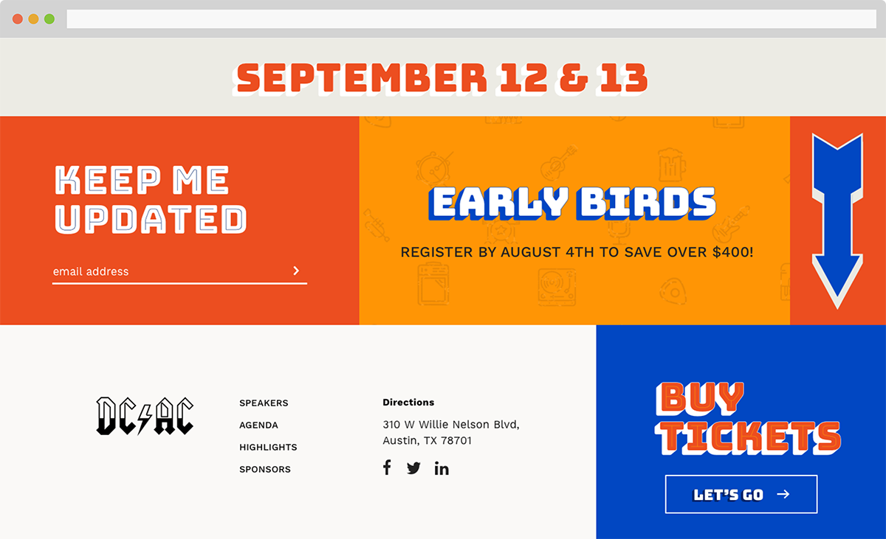

Each page features a large hero image that establishes the diagonal cut seen on the ticket link and elsewhere.
The website’s footer showcases David Jonathan Ross’s Bungee, layered to emulate Austin’s iconic murals.
Data Centers Austin Conference is an annual conference and meetup of data center professionals from all over the country. DCAC came to Ronik for a redesign of their existing website- a simple platform to drive potential attendees towards tickets, and educate on conference schedule, speakers, and sponsors. Alongside fellow designer Milan, I conceived one of two directions centered around a high-tech feel. The city of Austin was such an important aspect to the clients, however, so I moved into a direction that more closely embodied Austin’s character through it’s murals. Using David Jonathan Ross’s open source Bungee font, I created a layered feel for large text features that bridges the gap between Austin’s traditional charm and the high-tech nature of the heart of the conference- data centers.View the website
Copyright 2020 Christina Allan